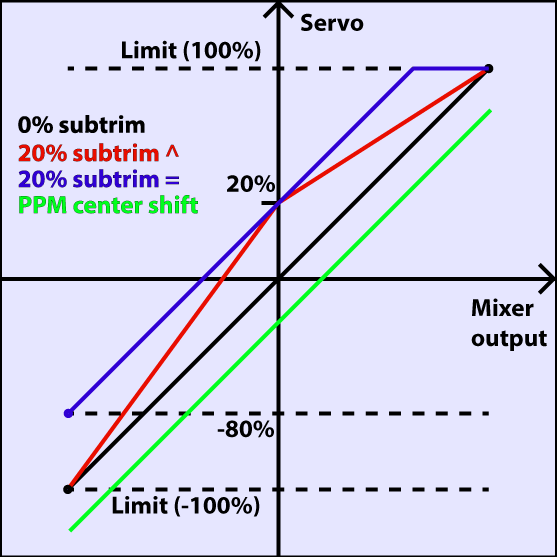
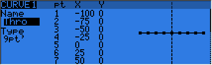
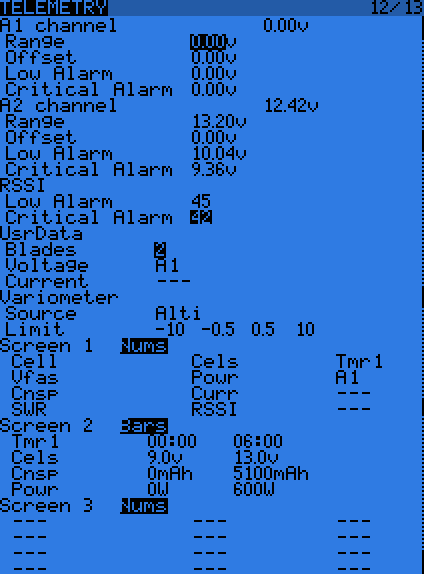

OpenTX User Manual
Table of Contents
1 Introduction
OpenTX is a free and open-source firmware for programmable radio-control transmitters. It runs on a variety of transmitter hardware types, which might differ in the number and layout of input devices (switches, buttons, sliders, etc.). This manual is concerned with OpenTX and its programming capabilities, please refer to the hardware-specific manuals to find out how to operate your transmitter and how to navigate the menus:
- FrSky X9D Taranis – XXX links
- Turnigy 9X
- Turnigy 9XR
- Turnigy 9XR Pro
2 Credits and licence
This manual includes contributions by:
- André Bernet – XXXXX github link
- andras – XXXXX github link
If you would like to help improve it or you have spotted an error, please let us know through the github issue tracker – XXXX link.
This manual is covered by the TBD. Therefore, commercial use of this manual is forbidden without explicit authorization of the authors and translators. Do not hesitate for permission, however, since we are interested in widespread use of OpenTX and its documentation, we simply like to know of any use in commercial applications.
3 Basics
In order to understand OpenTX, especially if you have used radios with systems other than OpenTX before, it is important to understand some of the history of model radio control. In the early days of radio controlled models, all electronics was analogue, simply passing the stick and switch positions from the transmitter directly to the servo channels in the receiver, and there was therefore a 1:1 correspondence between input axes and servos: each axis controlled exactly one servo. Later, analogue "mixers" became available that allowed the transmitter to "mix" (add) the value of one control axes into another, making it possible to control more complex models, for instance Delta or V-tail aircraft. Even in the age of computerized transmitters, many manufacturers still base their programming philosophy on this paradigm, simulating these plug-in mixer modules in the transmitter firmware but still maintaining the equivalence between input channels and servo channels. Although the functionality offered is, in most cases, adequate, the fact that you still have to name one side of a V-tail "elevator" and the other "rudder" is very confusing. The programming of a simple V-tail aircraft in this old philosophy (familiar to many modellers) can be visualized like this:
Some computerized transmitters, notably most made by the German company Multiplex, use a new approach much more intuitive and less confusing. This approach is also the basis of OpenTX. In this philosophy, each output channel of a new model defaults to "nothing", i.e. centre signal. After deciding which channel corresponds to which servo function, one can start defining which channels will react to which inputs (note the plural) and how:
The result of both philosophies is the same, and both can be equally versatile, but the approach adopted by OpenTX is cleaner and more intuitive once the 1:1 correspondence between inputs and servos is abolished. Take, for instance, a glider in which the stick axis without springs (usually called "throttle") controls a combination of flaps, spoilers, butterfly, etc., but none of the servos directly: it would be very confusing to still have one servo called "throttle" even though it isn't controlled primarily by the throttle stick, and the entire model doesn't actually have a throttle.
4 Overview
The following is a list of the most important concepts of OpenTX. Read through this chapter first, especially if you have used radios not running OpenTX in the past, as it should give you a good idea of what to expect from OpenTX.
- Models are complete model definitions stored in the radio, from
which one can be selected. Apart from certain "global" settings
such as stick mode, date and time, loudspeaker volume, radio signal
quality warning thresholds, etc., everything is model-specific,
including the mixer definitions and curves. Therefore it is
guaranteed that all the settings relevant to controlling the model
are stored independently for each model.
Models can be copied, which simplifies creating models similar to existing ones. The number of model memories varies with hardware, the current maximum being 60, but it is possible to store and recall (XXXXX TBD) models to/from a flash memory device (usually a microSD card) for virtually endless model memory space. Each model has a name and can be assigned an image for easy recognition.
- Channels denote outputs on the receivers, and are numbered. The
maximum number varies with the hardware, currently up to 32 on the
Taranis with both internal and external transmitter RF modules
operating with 16 channels each. Typically, with only one receiver,
the channel number in OpenTX corresponds to the number printed next
to the terminal on the receiver. No channel is special, each one
can be used for any function.
For clarity, channels can also be named, although this is optional. Naming only causes the name to be displayed on several screens (servo calibration, mixers, channel monitor, etc.) but does not influence control of the model. The name can be added, changed, or removed at any time with no further consequences.
The channel calibration feature allows the maximum throws and centre position to be adjusted for each channel, in addition to optional curves that can be used for fine-tuning the servo response.
- Inputs are controls, primarily the two sticks, their trims,
potentiometers, and switches.
- The stick axes are called "throttle", "rudder", "aileron", and
"elevator", and their assignment is defined globally by the "mode"
number. Therefore, if you change the mode of the transmitter
(swapping rudder and aileron, for instance) in order to let
someone else control your model, the inputs will be taken
correctly from the right axes in all models.
There is no way (and no need) to address the sticks at their physical position, for example "left stick forward/aft" is not available as an input.
- There are also "logical" inputs defined in the "input" section of
a model set-up. These can be used for some pre-processing (for
instance, to add a throttle-cut feature) of the inputs, or simply
to define named inputs that can then be moved later as required.
For example, a "flaps" input could first be assigned to one of the
dials, then moved to another dial by only changing the input
definition if the need arises.
Logical inputs can also be named, the name again having no impact on control of the model because it is only used for display purposes.
- The switches, and also the logical switch (see below) can be used as analogue inputs, in which case they can have the discrete values -100%, 0, and +100% (0 being only possible with three-way physical switches).
- The stick axes are called "throttle", "rudder", "aileron", and
"elevator", and their assignment is defined globally by the "mode"
number. Therefore, if you change the mode of the transmitter
(swapping rudder and aileron, for instance) in order to let
someone else control your model, the inputs will be taken
correctly from the right axes in all models.
- Logical switches are two-state (on/off) virtual switches that
allow a logical combination of a great variety of functions. Most
importantly, they can be used for generating an internal on/off
signal depending on the value of any analogue signal (input,
telemetry value, etc.).
Once defined, logical switches can be used wherever a two-way physical switch can.
- Mixers are where most of the logic takes place, defining the
combination of inputs, logical functions, flight modes, etc. for
each channel. Note that the output of these mixers runs between
-100% and +100%, any throw adjustment, centre calibration, and servo
balancing is performed separately using servo calibration. This not
only separates servo calibration from the actual logic but also
guarantees that the limits set (in servo calibration) can never be
exceeded, preventing mechanical damage to the servo, linkage, or
model.
Other than some other radios, mixers are defined on a per-channel basis. There is no way of using the same mixer in two channels. If two channels need similar mixers (such as in a V-tail aircraft), those mixers must be defined independently. Mixer lines can be copied, making duplicating a mixer very easy. Global variables (see below) can of great help to keep the mixer constants consistent across multiple channels.
If multiple channels use exactly the same mix, then it is possible to define the mixer only for one of the channels and create a simple "pass-through" mixer for the other channels using the first mixer's output as its input. If you take care that there is no "circular" or "recursive" reference causing a channel to depend on itself at one point, then this also doesn't cause any latency (delay in processing between channels).
- Global variables are global only within a model, not across the entire radio. Each has a value between -100% and +100%, just like any normal input, and can be used in many places where a constant would have to be entered (for instance, in the weight of a mixer line). There are also many ways of adjusting them (for example, binding them to a potentiometer input), so they can be used to make the mixer system even more flexible. One important use is the tweaking of certain parameters during the initial flights of a model, then removing the bits that allow changing it during flight once the correct parameters have been found.
- Curves can be used for controlling an input, mixer, or servo
response very accurately. There is a number of curves that can be
defined for each model (32 on the Taranis) and then used in many
places (input response, mixer lines, and servo calibration being the
most important).
Curves can also be named, the name having no significance in controlling the model.
- Flight modes allow for an easy combination of a variety of
settings that fit each phase of controlling the model (not only
aircraft, of course). Trim values and global variables can be made
flight-mode specific, and each can even be made dependent on the
same parameter in another flight mode, effectively letting the user
pick which parameters are independent in which flight mode.
Flight mode 0 is active by default, and the others are activated by switches or logical switches with the ones with lower flight-mode number taking precendence if the switch of more than one flight mode is active at the same time.
Many features elsewhere in the radio (inputs, mixer lines, etc.) can be set to be active only in a specified set of flight modes, extending their use far beyond trims and global variables. Flight modes can also be used wherever a switch or logical switch can, making their use even more versatile.
Flight modes can also be named, the name having no significance in controlling the model.
- Special functions are a way of triggering actions based on switch
values (physical or logical). Examples of their use are:
- Speech-synthesis voice output of parameter values at the flick of a switch, triggered by a timer value, triggered by a telemetry parameter reaching a critical value, etc.
- Pre-recorded voice announcements of important functions and warning.
- Setting global variables.
- Lua is a universal programming-language already in use in many devices in your everyday life that you don't even know about. OpenTX has a Lua interpreter built in, which allows you to extend the already great functionality of OpenTX even further. Lua programs (also called scripts) reside on the memory card of the transmitter and can be run from within your model using special functions in order to control complex features otherwise impossible or hard to realize, such as intricate gear-door sequencing. They can also be used outside of models, for example for implementing a model setup wizard which sets up inputs, mixers, etc. for common scenarios.
- Telemetry display, audio output, and haptic alerts are an
integral part of OpenTX. In fact, models can be set up such that
one never needs to look at the transmitter display because the radio
lets the user know acoustically or by vibrating whatever they need
to know.
With telemetry data from a variometer, an acoustic variometer readout is also available, similar to the total-energy instruments in manned gliders.
For speech synthesis and pre-recorded prompts, a memory card must be present and loaded with the relevant voice samples, whereas simple beep functionality is integrated into the firmware and functions even without the card.
- Trainer master functionality is implemented at the "sticks" level:
each channel of the "slave" transmitter is interpreted as a stick,
pot or input, thus the slave transmitter must be set up as a "1:1"
controller, passing each control axis directly to one of the servo
channels. Up to 16 slave channels are supported this way, and
assignment is free, meaning that any existing transmitter can be
used as a slave, even if it has fixed channel assignment. The axes
to be controlled by the slave transmitter can be picked in a very
flexible way.
The 16 trainer input channels can also be used directly in place of any analogue input within the model, regardless of whether the slave controller is in control or not. (XXXX TBC)
- Companion is a software program to be run on a common computer
(ready-make Linux, Windows, and Mac versions are available). It
goes hand-in-hand with OpenTX because its aim is to model your
transmitter as closely as possible on the screen of your computer.
Companion is very useful for trying new settings with the comfort of
your PC's large screen, keyboard and mouse, which usually allow for
faster programming than the few buttons on the transmitter. Models
can be copied to and from the transmitter using a USB connection,
therefore Companion is even useful for making large changes to
models which would be combersome to make on the transmitter itself.
For the prospective or beginning OpenTX users, however, Companion is a great tool for familiarizing yourself with the basic concepts of OpenTX, before even spending money on a transmitter.
5 Learning by doing
One thing every model pilot (or driver or captian) must learn at the early stage is to relax while at the controls, as an upset pilot can do stupid things they wouldn't normally do. Since the prospect of learning to use such a complex system as a radio with OpenTX can be similarly daunting, we thorougly recommend for the reader to sit back, relax, and follow this chapter closely, as it will set-up a fairly common aircraft model, displaying the use and features of the radio in the process.
5.1 The model memory
Why is this?
The model we just set up is empty.
6 OpenTX in detail
6.0.1 Menu overview
TBD: diagram of the menus and how to switch between them (on Taranis)
6.0.2 Main views
We have 3 main views showing the same basic information in the top part and different inputs/outputs on the lower part. On the main views a long press of the ENTER key brings up a menu where you can reset the timers, telemetry data (min/max values, altitude, GPS home…), all of those, bring up a statistics view (throttle graph, timers), or show the developer credits. As mentioned above, a short press of the PAGE key switches views.
The new title bar includes radio battery voltage, receiver signal strength (for FrSky telemetry-capable receivers), main onboard voltage (can be receiver battery, flight battery, or anything else depending on sensors the "Voltage" parameter in the telemetry settings), status icons (SD present, USB connected, trainer port mode, logging in progress), audio volume and time.
The other "always present" items are model name, flight mode, and trim/pot positions. The logo is of course customisable, you'll be able to load your model's photo there! See this thread for a great collection of models made by the community.
The first view lists the physical switch states in the bottom left zone, and the 2 timers (when enabled) on the right.
The second shows the gimbal and switches positions, and is handy to check that all the physical controls respond as intended.
The third shows again the physical switches on the left, and the states of the 32 custom (logic) switches on the right.
The last view is a channel monitor showing the servo outputs for all 32 channels (+/- change page). If channel names are defined on the SERVOS page, they will show up here instead of the numbers for convenience.
6.0.3 Telemetry view
A LONG press of the PAGE key from any of the main views brings up the telemetry views. The PAGE and +/- keys will then cycle between the power status screen (voltage, current, power or A1/A2 if not set, cell voltages from an FLVS-01 sensor if connected), the min/max and GPS coordinates screen, and if defined from one to three customs screens that can hold up to 12 items each, configured in the telemetry setup menu.
6.0.4 Radio general settings
A LONG press of the MENU key brings up the mostly self-explanatory radio setup menu:
- Date/Time: To be set, they serve as info but also to give a correct timestamp to files and logs saved by the radio.
- Battery range: range of the graphical radio battery meter on the main views. To be set accordingly with the battery type you use (2s lipo here).
- Sound settings: Mode, Master volume, individual volumes of all mixed sources (Beeps, sound files, variometer, background music), beep duration and pitch.
- Contrast: Screen contrast setting.
- Alarms -> Sound off: if "Sound Mode" is "Quiet", the radio will not even sound warnings like a low battery. This alarm will remind you of that when turning the radio on.
- Inactivity alarm will remind you if you have forgotten to turn the radio off.
- Backlight -> Mode: If set to Keys, Controls or Both, the backlight will turn on when a stick/switch is moved and/or a key is pressed, for the duration set below.
- Backlight -> Alarm: Backlight will flash when an alarm sounds.
- Splash screen: On Taranis the splash will always be shown as the memory takes some time to load. Setting this on will just show it for longer.
- GPS time zone is there to show you the correct time when a GPS is present, and coordinate format lets you adjust display format to your liking.
- Country code: Must match your geographical location to keep RF transmission parameters within regulatory requirements.
- Voice language: Allows you to choose the language of the voice announcements. Note that the list contains all supported languages, but you also need to ensure a voice pack for that language has been loaded onto the SD card (in a subfolder of the SOUNDS directory).
- Units: Allows choosing between metric and imperial units for telemetry values.
- FAI mode (if the "FAI choice" option is selected in OpenTX companion): Disables all telemetry displays other than RSSI and voltage to comply with contest regulations. This is one-way, i.e. when you turn it on with this menu option it can't be disabled anymore, you need to connect the radio to the PC and use OpenTX companion to turn it off again (to prevent cheating). This allows you to come to the field, do your checks / test flights with telemetry, and turn the restricted mode on before the beginning of the contest on the radio itself.
- Default channel order: Defines the order of the 4 default mixers that are inserted on channels 1-4 when creating a new model. Set this to your preference. They can of course always be moved later, this is just a time-saving option.
- Mode: This is your stick mode, e.g. Mode 1 for throttle and aileron on the right stick, Mode 2 for throttle and rudder on the left stick.
6.0.5 SD browser
A SHORT press of the PAGE key brings up the SD card browser page:
This allows you to browse the SD card contents.
On each file or folder, pressing ENTER will bring up a contextual menu with some basic file operations (copy/delete), as well as others depending on the file type.
Folders are organised as such:
- BMP folder: This is where you should place the 64x32, 4-bit grayscale .bmp files that you want to use as model logos. Filenames must be 10 chars long or less (not including extension). A collection of files is available here. Placing the cursor over a valid file in this folder will show it on the right side of the screen, and in the contextual menu you will find an entry to assign the selected image to the current model.
- LOGS folder: This is where you will find telemetry logs if enabled. Files will be created with the same name as the model they were saved from, with the date appended. One log file is created per day for each model.
- MODELS folder: Model files saved by the "Archive model" command of the model selection screen will be placed here. Similarly, models you want to reload using the "Restore model" of the same page need to be placed there beforehand.
- SOUNDS folder: This is where voice packs need to be placed. ZIP files with the standard voice packs can be downloaded from within OpenTX companion, or here. Extract the ZIP file to the root of the SD card, and it will create the necessary subdirectories (e.g. SOUNDS/en for the English pack). Any file you want to have available for the "Play Track" custom function needs to be placed within the language's directory as well. In this folder, the contextual menu includes a preview function.
- XXXXXXXX others?
The microSD card can be formatted by selecting the relevant option in the menu that appears when pressing MENU LONG. A confirmation will be required.
6.0.6 Trainer
A SHORT press of the PAGE key calls the trainer settings page:
This page allows you to configure the trainer function for "master" use (make sure the Trainer mode in model settings is set to Master). For each of the 4 main functions you will be able to set the mode (OFF, += for Add, := for Replace), ratio and input channel.
Start by setting the mode for each function (the "standard" way is Replace i.e. when the trainer function is activated the function is fully transferred to the student, Add allows both master and student to act upon the function together). Then select the source channel accordingly to the brand/model of the student radio, and set the ratio to 100% for now. Now ensure the student radio is connected and recognised (moving the sticks of the student radio should change the 4 numbers at the bottom of the screen) make sure all its trims are neutral, all its sticks are centered (including throttle). Select the CAL field and press ENTER twice. The numbers should now be 0.0 or very close.
Now move the student radio's sticks and check the numbers vary from -100 to +100. Should they reach those values before the stick hits the end of its travel, reduce the ratio so that the throws match. Should they never reach -100 to +100 even with full stick deflection, use the Multiplier field to increase it.
Trainer input is now configured. Note that this setting is global, because it depends on the student radio regardless of the selected model. In order to use the Trainer function on a specific model you will need to assign the switch you want to the "Trainer" Custom Function for that model. More about this further.
6.0.7 Version
This screen allows you to see the version of your currently loaded OpenTX firmware.
When reporting a bug, please be sure to include the revision number you see on the SVN line. XXXXX TBC
6.0.8 Diagnostics
The next 2 pages are the switch and analog diagnostics, they will show you what the firmware reads from the radio's keys and potentiometers. This is the first place to go to if you run into issues with badly responding sticks / pots / switches. If things are wrong here (inconsistent stick centering or end point readings, flickering value,…) then you can be sure the problem is hardware-related and not due to wrong model setup.
- Input monitor
The Analog page also features the battery calibration setting. It should be correct out of the box, but if not move the cursor to the field, and adjust it so that the displayed value matches the voltage you can measure on the battery terminals with a voltmeter.
- Calibration
This is the place where you can calibrate sticks and pots. Follow the on-screen instructions, and note that when asked to center the sticks this includes the throttle stick and the 2 sliders. S1 and S2 pots however do not need to be centered, only the extremes are calibrated.
6.0.9 Model menus
A SHORT press of the MENU key from the main views brings up the model selection screen. There models can be selected, deleted, backed up and restored to/form SD card using the menu brought up by a LONG press on the ENTER key. They can also be copied or moved (one SHORT press on ENTER key highlights the line, +/- create and place a copy of the model on the desired slot, while two SHORT presses create a dotted outline where +/- simply move the selected model to another slot.)
- Model setup
A SHORT press of the PAGE key brings up the basic model setup page:
- Model name: Self-explanatory… Change letter with +/- keys, go to the next with ENTER SHORT, or press ENTER LONG to capitalize the current letter before switching to the next.
- Model image: There you can select a 64x32px, 16-grayscale .bmp file located in the BMP folder of the SD card as your model logo. To be able to preview the images in the folder, use the SD Browser.
- Timers: There are 2 fully programmable timers, that can count either up or down. If the value is set to 00:00 they will count up from 0, if not they will count down from the preset value. The trigger is set using the field next to the timer value, ABS counts up all the time, THs runs whenever the throttle stick isn't at idle, THt starts the timer the first time throttle is advanced, TH% counts up as a percentage of the full stick range. Persistent, if ticked, means the value is stored in memory when the radio is powered off or model is changed, and will be reloaded next time the model is used. Minute call will beep / say the time every full minute, while countdown will also give announcements several more times during the last minute.
- Extended limits allow setting servo movement limits up to 125% instead of 100%.
- Extended trims allows trims to cover the full stick range instead of +/-25%. Be careful when using this option, as holding the trim tabs for too long might trim so much as to render your model unflyable. The "Reset" item will reset all trims (for all flight modes).
- Trim step sets the precision of trim clicks. Exponential means very fine steps close to the trim center, but larger ones the farther you get from center.
- Throttle reverse: Ensures correct operation of throttle-based timers and functions for people who like having full throttle with the stick down.
- Throttle source defines what triggers the THx functions of the timers. It's common to set it to the throttle channel instead of the stick, so that throttle cut or other modifiers are taken into account.
- Throttle trim: IC engine mode, where trim only affects the idle part of the throw without touching the full throttle point.
- Throttle Warning: Will warn you if the throttle stick is not at idle when the radio is powered up or a model is loaded.
- Switch warning: Defines whether the radio requests the switches to be in predefined positions on power on/model change. To set them, arrange your switches the way you like, and press ENTER LONG.
- Center beep: Makes a beep when the selected control(s) pass the center point.
- Internal RF:
- Mode: Transmission mode of the internal RF module (OFF, D16, D8, LR12).
- Channel range: Choice of which of the radio's internal channels are actually transmitted over the air.
- Receiver no (D16 / LR12 only): defines the behavior of the receiver lock function. This number is sent to the receiver, which will only respond to the number it was bound to. By default this is the number of the model's slot when it is created. It can however be changed manually, and will not change if a model is moved or copied. If manual setting or a copy/move operation results in 2 or more models on the radio having the same number, a warning popup will show up. It is then up to the user to determine if this is the desired behavior or not and change if required.
- Bind and range check fields get activated by a press of the ENTER key. The radio will beep every few seconds to confirm. Range check will display a popup with the RSSI value to evaluate how reception quality is behaving.
- Failsafe mode (D16 / LR12 only): Allows choosing between simply holding the last received positions, turning off pulses (like old PPM MHz receivers), or moving the servos to custom predefined positions. For custom positions a SET field will call the failsafe settings page, where the position can be defined separately for each channel. Select the desired channel, press ENTER to get in edit mode, move the control to the desired position, and press ENTER to save. In D8 mode this field is hidden, failsafe needs to be set on the receiver as described in the receiver's manual.
- External RF:
- Module type: PPM for generic modules, XJT (same operation modes as above), DSM for Spektrum “hack” modules made using these instructions. Note that the Orange DSM and Spektrum DM9 modules both need PPM.
- Channel range: same as for internal module.
- Receiver no, Bind, Range check (when module type is XJT): Same as above.
- PPM Frame (when module type is PPM): Allows setting the frame length, pulse length, and polarity of the PPM frame. The frame length is automatically adjusted to a safe value when the number of transmitted channels is changed. Advanced users can still adjust it afterwards if necessary.
- Failsafe mode: When module type is XJT, same as above.
- Trainer mode: Master or slave, this setting defines which way the trainer port works. An icon is shown in the main view when the cable is inserted showing which mode is in use. In Slave (output) mode, the channels that should be sent and the PPM frame parameters are customizable just like for External RF -> PPM.
- Helicopter setup
A SHORT press of the PAGE key will bring up the helicopter CCPM head mixer page. This page allows setting a swashplate type, and limiting the control authority through the Swash Ring setting.

The inputs of this mixer are the Ail and Ele sticks, plus the virtual channel selected in "Collective source". This channel would see entries added on the MIXER page for one or more pitch curves.
The outputs of the CCPM mixer are CYC1, CYC2 and CYC3, which need to be assigned on the MIXER page to the channels you will connect your servos to.
Note that the settings made here have no effect unless you are using those CYC1, CYC2 and CYC3 sources. A multirotor or flybarless helicopter which uses onboard computers/mixers will NOT use them.
- Flight modes
Next up is the flight modes screen.
8 flight modes plus the default one are available for use. Each of them can be named, has a selectable activation switch (physical or logical), a trim selection array (R, E, T, A when shown mean the mode has its own trim setting for that control, but each can be changed to a number from 0 to 9 and thus use the same value as the specified mode), and slow up/down parameters for smooth transitions between modes.
The priority of the flight modes is such as the first FM of 1-8 that has its switch ON is the active one. When none has its switch ON, the default FM0 is active.
- Sticks
The next screen allows setting one or more input formatting rules to each stick axis. This is the first step of the control chain - where you define the amount of control authority you want on each stick.
PLACE NEW IMAGE HERE
As many lines as required can be assigned to each stick (LONG press ENTER brings up a popup menu to insert/delete lines), and again the first one that has its switch on (starting from the top) will be the active one. This is commonly used to create dual, triple,… rates. A name can be defined for each entry, as well as the rate and exponential ratio. A curve (built-in or custom) can also be used instead of the "simple" exponential function.
The Modes line allows to choose in which flight mode(s) (highlighted numbers) that line can be active. If the current mode is not selected, turning on the switch will not activate that formatting line.
The Side parameter limits the effect of that formatting line to only one side of the stick. A summary of the selected modes for each line is shown on the main screen.
PLACE NEW IMAGE HERE
- Mixer
The next page is where the actions on the controls will be mapped to servos. OpenTX does not have any predefined mixing functions that relate only to a particular model type or situation, it rather gives you a blank canvas you can build upon. The key to configuring a model on OpenTX is not to think about "activating the delta mix" like on certain radios, but rather to think about what you want your control on the model to do in response to an input on the radio's controls. The mixer is where all that "logic" gets entered.
The various channels are outputs, for example CH1 being the servo plug #1 on your receiver (with the default protocol settings). A channel without a mixer line will just center a servo that would be connected to it.
Each mixer line connects one input to the channel it's on. Inputs can be:
- The 4 stick axes
- The 4 pots and sliders
- The heli mixer outputs (CYC1-3)
- A fixed value (MAX)
- The 8 physical switches
- The 32 custom (logical) switches
- The trainer port input channels (PPM1-8)
- Each of the radio's 32 channels, which allows using channels as a virtual functions for clarity (mix several inputs into one reuseable function, that can then be assigned to one or more channels). Note that the settings of the SERVOS page are NOT taken into account there.
All inputs work on a -100% to +100% basis. Sticks, pots, channels, CYC sources, trainer inputs will vary proportionally within this range. 3-position switches will return -100%, 0% or +100%. 2-position switches (and logic ones) will return -100% or +100%. MAX is always +100%.
If you want the servo connected to the #2 plug of your receiver to be controlled by the elevator stick, you will simply create a mixer entry on CH2 with Ele as source. Easy enough!
There can be as many lines as needed on each channel, and the operation between each line can be selected. To create a new line, you would LONG press the ENTER key, and select insert before/after. By default all the lines on a same channel are added together, but a line can also multiply those before it, or replace them.
For clarity, each line that is currently active and contributing to the channel's output will have its source displayed in bold. This can be very handy when many are present and to check switch functions.
For each mixer line, several parameters are available:
- A name can be entered for convenience
- The weight (in %) of the input can be set. This sets how much of the input control has to be mixed in. A negative value inverts the response.
- An offset on the input value can be added.
- A trim can be used, for sticks this is by default the trim associated to the stick, but can be chosen to be one of the other trims (for cross-trimming for example) or disabled altogether. For other inputs the trim defaults to OFF, but can of course be set to one if required.
- Either a differential value can be set (reduces response by the specified percentage on one side of the throw) or a curve (built-in or custom) can be assigned. When a custom curve is selected, a press of the MENU key will bring you to the curve editor.
- The modes the mixer line is active in can be selected (see D/Rs).
- A switch (physical or virtual) can be used to activate the mixer line.
- A sound warning (1, 2 or 3 beeps) can be set to play whenever the line is active.
- The Multpx setting defines how the current mixer line interacts with the others on the same channel. "Add" will simply add its output to them, "Multipl" will multiply the result of the lines above it, and "Replace" will replace anything that was done before it with its output. The combination of these operations allows creating complex mathematical operations.
- Response of the output can be delayed and/or slowed down with regard to the input change. Slow could for example be used to slow retracts that are actuated by a normal proportional servo. The time is how many seconds the output will take to cover the -100 to +100% range.
As a little example, if you wanted to add some compensation on the elevator channel when you increase throttle, you would go through a simple path:
- What's the control surface I want this to act on? Elevator, which is connected to CH2.
- When do I want it to move? When I move the throttle stick, in addition to whatever would already be present (usually the elevator stick).
So you would simply go on CH2, and insert a new line with Thr as source. Type would be Add as the compensation needs to be added to the "normal" elevator response. As the required compensation is likely small, you will dial in a small weight, maybe 5%. On the ground with motor disconnected, you will check the elevator compensates in the correct direction. If not, you'll invert the weight to -5%.
You could then assign a switch, in order to be able to activate/deactivate it in flight to see if the amount of compensation is actually appropriate. If the correction is more complicated, you might want to assign and create a curve that matches what's required.
- Servos
The SERVOS page is the interface between the setup "logic" and the real world with servos, linkages and control surfaces. Up to now, we have set up what we want our different controls to do, now is the time to adapt that to the mechanical characteristics of the model.
For each channel, we can define:
- A name, that will be shown on the mixer screen when the cursor is on a line belonging to that channel, on the channel monitor and on the failsafe settings page.
- An offset or subtrim.
- Low and high limits. These are "hard" limits, i.e. they will never be overridden, so as long as they are set so that your servo never forces, it really never will. They also serve as gain or "end point settings", so reducing limit will reduce throw rather than induce clipping.
- Servo reverse.
- Center adjustment. This is similar to subtrim, with the difference that an adjustment done here will shift the entire servo throw (including limits), and won't be visible on the channel monitor.
- Subtrim behavior: When set to default, adjusting subtrim will only shift the center of the servo throw. Given a -100% to +100% order from the mixer, the servo will still move exactly between the lower and upper limits, without clipping or dead band. This introduces a different stick to servo movement relation for both sides of the stick. Depending on the situation it can be either convenient or problematic, so the = setting has been added to change subtrim effect to rather shift the servo throw "symmetrically". A full throw order from the mixer can now be clipped by the limit that is on the same side as the subtrim, while on the other side the servo will not reach the limit anymore. That way on both sides of the stick a given stick movement always results in the same servo movement. Typically using the default mode allows for faster setup of servos that are driven by a single control input, while = is required to keep correct response of control surfaces using differential and/or mixing several inputs together. The = mode typically requires reducing D/R so that a margin is left between full "control" throw and the defined limits.
The following diagram illustrates the respective behavior of both subtrim modes and how Center adjustment compares to them:

The last line after CH32 is the "Trims to Offsets" function. It is used to take the trims of the currently selected flight mode, transfer their content to the subtrims, reset them, and adjust all other flight modes' trims. If you're close to running out of trim, instead of having to adjust every value one after the other, all it takes is to LONG press ENTER on this line and everything is done magically. Beware that you should still check if it would not be wiser to correct the problem mechanically, especially with large values, as depending on the subtrim behavior setting it might lead to either insufficient and asymmetric throws, or clipping/dead band.
- Curves
Custom curves can be used either in input formatting or mixers. There are 16 of them available, and they can be of several types (3, 5, 9, 17pt, both with fixed or user-definable x coordinates). 3pt would be a 3-point curve with fixed x, 9pt' is a 9-point curve with user-defined x coordinates.
These curves are available in addition to the "built-in" curves:
- x>0, x<0: If input is positive resp. negative return input, otherwise 0.
- |x|: Return the absolute value of the input.
- f>0, f<0: If input is positive resp. negative, return 100%, otherwise 0.
- |f|: If input is negative return -100%. If input is positive, return +100%.

The curve editor allows you to define a name for the selected curve, the type, and of course set the coordinates. When the cursor is on one of the editable coordinates, a LONG press of the ENTER key will bring up a menu where you can choose a standard preset curve, mirror the curve vertically, or reset all points.
- Global variables
Global variables are values that can be substituted to the usual number on every Weight, Offset, Differential or Expo setting. Their main use is to group the adjustment of several parameters that should have the same value. For example, aileron differential on a glider with 4 surfaces responding to the aileron function. When trying to find the sweet spot for the differential value, instead of having to repeatedly edit the differential value in 4 mixers, all 4 can be set to use a global variable (e.g. GV1 resp. -GV1, selected by a LONG press of the ENTER key on the Differential field). Then adjusting GV1 on this page is all it takes for all differentials to be updated.
Global variables are also flight mode specific, so instead of having to create separate mixer lines with different values depending on the flight mode one can simply use a global variable with different values for each flight mode. This can significantly help simplifying the mixer screen by avoiding many duplicate entries.
Global variables can also be adjusted in flight thanks to the Adjust GVx Custom Function that will be described later, and help adjusting those parameters that are easier to tweak in flight like D/R ratios, expos or again differential.
The Global variables screen allows setting a name for each of the 5 available variables for conveniency, and seeing/setting the value each of them will have in each of the 9 flight modes.
- Logical switches
These are logic switches that are used to compare values and combine various conditions.
The first "operation" column lists a few arithmetical, logical and differential operations. In arithmetical ones a and b represent variables, x represents a constant. Variables can be every source, i.e. all those available in mixers, plus the 5 global variables and all telemetry values. In logical operations the available sources are all physical and other custom switches. Differential functions compare the variation of a variable since last match to another value.
- a~x: active when variable a is approximately equal to constant x (hysteresis added, as comparing a stick's value for example would pretty much never trigger an exact match)
- a<x, a>x: Active when variable a is smaller resp. greater than constant x
- |a|<x, |a|>x: Active when the absolute value of variable a is smaller resp. greater than constant x
- a<b,a>b,a=b: See above, but with 2 variables
- AND, OR, XOR: Logical and, or, exclusive or between 2 binary inputs
- d>x, |d|>x: Active when the selected variable, respectively its absolute value has changed by more than x since last time. For example, d>x Alt 10 would trigger once every time Altitude goes up by 10m. |d|>x Alt 10 would trigger once every time Altitude goes up OR down by 10m.
- TIM: A timer, TIM 0.5 2.0 would be active for 0.5s, inactive for 2s, and repeat.
Custom switches offer 3 more parameters: An extra AND condition (if selected, must be on for the custom switch to become active), a Duration parameter (the minimum time a custom switch will be active for even if its conditions become false instantly), and a delay parameter (that affects both activation and deactivation). See the title bar header to see the function of the field the cursor is on.
A long press of the ENTER key on a custom switch's label will bring up a popup menu that allows you to copy/paste/delete an entry for more convenient entry of similar settings.
- Special functions
This is the place where switches can be used to trigger special functions such as trainer mode, soundtrack playback, speech output of variables etc.
The first column selects the trigger, which can be any switch (physical or custom) or ON (always on). A LONG press of the ENTER key will switch to "toggle" mode (ending with t), i.e. the selected input will be turned on when the selected switch is activated, and will remain on until it is deactivated and reactivated again.
Scrolling through the list you will also find a few more options: One (triggers just once when loading a model or turning the radio on), SHdownS (short press of the momentary switch), SHdownL (long press of the momentary switch).
The available functions are:
- Safety CHx: When active, the output of CHx is forced to the selected value. A checkbox is there to enable the function, which you would typically do after ensuring the value is set correctly and the switch is off if your model is powered.
- Trainer, TrainerXXX: Enables trainer mode globally, and for individual functions. Unless a custom function is set for an individual function, turning the one set for Trainer automatically activates all 4 sticks.
- Instant trim: When activating the selected switch the current stick positions will be added to their respective trims. This is typically assigned to a momentary switch, and used on a maiden flight if you expect trims to be way off. Instead of frantically clicking the trim tabs, you would hold the sticks so that the model flies straight, and depress the switch once. It is best to remove that entry after the maiden flight, to avoid hitting it by mistake and bringing the model badly out of trim again.
- Play Sound: Play a simple tone from the available list.
- Reset: Resets the selected item (Timer 1, Timer 2, telemetry values, or all of those)
- Vario: Turns on variometer sounds (see Telemetry setup)
- Play track: Plays a sound file from the SD card, with repeats at the specified interval
- Play value: Speaks the current value of the selected parameter, with repeats at the specified interval
- SD Logs: Logs the telemetry values to SD card at the specified interval
- Volume: Adjusts sound volume using the selected source
- Backlight: Turns backlight on
- BgMusic, BgMusic || (pause): Plays a selected soundtrack from the SD card. The BgMusic Pause item pauses the track when activated and resumes it once inactive again, while switching BgMusic off stops the track completely.
- Adjust GVx: When active, sets the relevant global variable to the value of the specified source. The adjustment source can be one of 4 groups cycled through using a LONG press of the ENTER key:
- A fixed value
- A proportional control, or a channel with for example specified curve/weight/offset to limit the adjustment range
- Another GVAR
- +1/-1, to increment/decrement the GVAR with each activation.
A long press of the ENTER key on a custom function's label will bring up a popup menu that allows you to copy/paste/delete an entry for more convenient entry of similar settings.
- Telemetry
This page groups all the basic telemetry-related settings.

- A1 and A2 are the 2 analog ports available on D8R receivers. X8R receivers only have A1, which measures the receiver's power supply. Range sets the maximum measurable voltage, i.e. 3.3V / (divider ratio). For example with the receivers' internal sensor (1:4), this would be 13.2V. For the FBVS-01 sensor with the default ratio of 1:6, this would be 19.8V. The number next to "Ax channel" will show the currently measured value, and can be used to confirm or correct the Range setting by comparing the reading with an external voltmeter. Offset and custom units (A, m/s, m, °, %…) can be used in addition to help scaling the input to accomodate 3rd-party analog sensors.
- "Low" and "Critical" alarms for A1, A2 and RSSI will trigger audio warnings when the measured value goes below the defined levels. When a microSD card with a Taranis voice pack loaded is present in the slot, those alarms will be announced in clear voice (e.g. "A1 Low", "A2 Critical", "RF signal Low"). If no card is present each will trigger a different beep pattern. We do recommend the use of the voice capability as 6 different beeps can be difficult to remember under stress.
- Blades: Number of blades for the RPM sensor.
- Voltage/current: Allows choosing the input for the power calculation and mAh count features. These should match the input you've connected the corresponding sensors to.
- Variometer source: sensor type that is installed in your model. "Vario" is for the new FrSky vario sensors as well as the openxvario (vertical speed is calculated by the sensor and transmitted digitally), A1/A2 are for analog sensors that transmit vertical speed as a voltage connected to the respective input. Limit sets respectively the maximum expected sink rate, low and high dead band (no sound), and maximum climb rate for the sounds generated by the Vario custom function. The low dead band can be set to OFF, which disables sink tones altogether.
Following those basic parameters are the selection lists for the 3 custom telemetry screens that can be seen by LONG pressing the PAGE key on the main views. Each screen can either show numerical parameters (9 in the main screen area and 3 in the bottom bar), or 4 bargraphs with configurable upper/lower limits.
Each field can be one of the various available parameters, of course the corresponding sensors and/or hub must be installed in the model:
- Tmr1,2: Both timers
- SWR: Transmitter antenna quality. Should always be below 51, or a popup warning will appear and an audio alarm will sound to warn you to check the radio's antenna. The value itself is of little meaning.
- RSSI: Lowest of the RSSI values from the radio and receiver in D8 mode. In D16 mode, RSSI of the receiver.
- A1,2: Analog ports on D receivers (only A1 available on X8R receivers, with receiver voltage)
- Alt: Barometric altitude sensor
- Rpm: Engine speed, number of blades is adjusted in the settings above
- Fuel: Fuel level
- T1,T2: Temperature sensors 1 and 2
- Spd, Dist, GAlt: GPS speed, distance from starting point and GPS altitude
- Cell: Lowest cell on FLVS-01
- Cels: Sum of all cells on FLVS-01
- Vfas: FAS-40/100 voltage measurement
- Curr: Current, source configured in the settings above (FAS or analog)
- Cnsp: mAh used totalizer (needs current source configured correctly)
- Powr: Power, voltage and current sources configured above
- AccX,Y,Z: Acceleration values from TAS-01
- Hdg: GPS heading
- Vspd: Vertical speed (either calculated by the radio or reported by the sensor, depending on the sensor type chosen above)
- xxx+/xxx-: Min and max values of the available parameters
- Templates
The templates are currently "starting points" for model setups. When selected with ENTER LONG they will either add to or replace the current model's mixers and settings with the usual ones for the usage scenario they correspond to (best used on a newly created model). These can be used to build upon or tweak to achieve the desired result, or simply to get an idea of what's required for that model type.
6.1 Tutorial: your first model in OpenTX
Now that you've seen the basics and that your battery has some charge, what about a little bit of practice? The radio comes from the factory with the sticks already calibrated, so the first thing to do with your radio would be to configure the general settings. Get to the relevant page with MENU LONG, set time, date, sound volumes to your preference (the lower end of the volume slider is typically needed when using headphones, while the upper end is good for using with the internal speaker), play with the backlight setting, set the RF country code to your location, the default channel order to your preference, and the stick mode to match your flying style. Battery gauge and alarm are factory set for the supplied battery.
The radio will have created an empty model for you, so after having gone back to the main view you'll be able to go to the model setup screen by pressing MENU SHORT and PAGE SHORT. There you'll want to make sure you've set the RF mode that matches the receiver you want to use. When using the internal module, to bind your receiver select the "Bind" field and press the ENTER key. The radio will beep every few seconds. Now follow your receiver's instructions for binding (press and hold the F/S button then apply power for D and X receivers, connect jumper to S pins of channels 1 and 2 and apply power for V8x-II receivers). The receiver LED will flash fast to confirm binding. Press exit on the radio, Remove the jumper on the receiver if applicable, and cycle receiver power. You should now have servo control of channels 1-4 with the sticks.
- Setting up a model
- OpenTX basics
Now that everything works, it's time to stop a moment for some theory about the basic operation of the OpenTX firmware.
As briefly described above, OpenTX differs from the majority of mainstream radios by its programming philosophy. Owners of Multiplex radios will however feel at home very quickly, as the principles are very similar. As opposed to common radios that offer a choice between a limited set of predefined usage scenarios (airplane, glider, helicopter), a number of functions that are commonly used with such models (delta, flaperon, camber, butterfly…), and have fixed assignations (sticks always control their respective channels), OpenTX offers a blank canvas on which you will build your setup: the mixer screen. This approach ensures maximum flexibility because whatever you do you will never have to work around what the radio expects you to do, which is a blessing for anybody having to work with "new" model types or configurations which still "don't exist" for mainstream radio manufacturers, and as such for which the built-in functions are usually useless. So you can see it that way: For some model types, usual predefined functions can allow setting up a model in seconds (just enable a function), but for others you'll spend hours trying to get around their limitations. On OpenTX everybody is more or less at the same level - it might take a little longer at the beginning to set up a seemingly simple model, but a complicated one won't take much more. As there is no existing function you can just turn on, it will require basic understanding of how your model is supposed to work, and what you want each control surface to do. This means that you might even learn something about your model in the process of setting it up!
The control order path starts from the hardware controls, goes through the STICKS screen (anything affecting control response like dual rates and exponential), continues to the mixer, and ends up being adapted to the mechanical characteristics of the model in the SERVOS screen.
- Everything about the mixer screen
We'll start with this as it is the center of the radio. The mixer screen lists the 32 output channels to which you can link one or more inputs from a long list of physical controls (sticks, pots, trims, switches), logic sources, other channels and trainer inputs. Each assignation is done with a mixer line. A new model will have 4 predefined mixer lines on channels 1,2,3 and 4 that link the 4 sticks to them according to the channel order preference you have set. These are there purely for convenience, and can of course be edited or deleted.
Let's delete them all by highlighting them, pressing ENTER LONG and choosing "Delete". Your mixer screen is now empty, which means the radio does nothing at all. Well it does, it sends out the number of channels that are defined on the model setup page to the receiver (channels 1-8 by default), but as those channels are empty in the mixer screen no servo will respond, they'll all be centered. You won't go very far with that, so you'll want to add control inputs to those channels. You'll create a mixer line on CH1 by highlighting it and pressing ENTER LONG, and will end up in the INSERT MIX page. Scroll to the "Source" field, press ENTER, and select the control you want to act on CH1. You can do it by browsing the list with the + and - keys, or take the easy route and just move the desired control (if it's a physical one, of course). Move the aileron stick, and the field will change to Ail (it might have already been there if your channel order preference set in the general settings had A for the first channel, as that's taken into account). You can leave the other parameters at their default settings, which mean:
- The mix ratio of this input is 100%, so the scaling of the mixer line's output will be equal to its input. A value of -50% would mean the output would be half of the input, and inverted.
- There is no offset, so with an input of 0 the output of the mixer line will also be 0. A value here would shift the response by that much percentage of (input x weight).
- Trim is ON, it could instead be excluded from the calculation (OFF), or one of the other trims could be used (for cross-trimming for example). D/R and expo (the entries on the STICKS screen for that channel) are used. Unticking the box would mean the mix receives the raw stick input even if a D/R is active.
- Differential is 0, so the mixer output will be symmetrical on both sides. A value of 20% would mean the line's output would be 20% less on the negative side than on the positive one. The "Diff" field is editable, and by using the +/- keys on it you'll be able to select a curve instead (predefined or custom).
- The mixer line is active for all flight modes. By "unticking" some of the numbers, you would disable that line whenever the corresponding flight mode is selected.
- No switch is assigned to the line, so it's always active (as long as the modes setting above allows it). Selecting a switch (physical or logical) would allow activating or deactivating the line when needed.
- Warning is off. If set to 1,2 or 3 the radio would emit 1,2 or 3 short beeps every few seconds to let you know that line is active.
- Multiplex is Add, so this line is just added to the previous ones on the same channel. If set to multiply it would multiply the calculated result of the lines above it, and if set to replace it would replace anything that's above it whenever it's active.
- Delays are 0, so if that line had a switch assigned it would be activated/deactivated instantly when the switch is toggled. Time is in seconds.
- There is no slowing down, so the line's output reacts instantly to input changes. Times set here are expressed in seconds to cover the entire range (-100 to +100). If 2 seconds are selected, the line's output will take 0.5 second to gradually sweep from 0 to +50% if the input was moved by that much or the mixer line was activated/deactivated by a switch.
- You can also name the mixer line. This name is shown on the main mixer screen, so setting names is a good idea to help maintain complex setups where you might have many lines on each channel.
Note that at any time in the Mixer screen and the EDIT/INSERT MIX dialogs you can press MENU LONG to bring up the channel monitor. This makes it easy to try the different parameters and see their effect on the channel's output. In addition to this, you will see that on the mixer screen each active line has its name and source displayed in bold, so it's always clear at any given time as to which lines are actively contributing to the channel output.
The description is long, but in practice if we now do it again to control CH2 with the elevator stick it will only take a couple of seconds to select CH2, press ENTER LONG, scroll to Source, press ENTER, move the Elevator stick, and press EXIT twice. Setting up the mixer for a vast number of basic models is as simple as that. In addition to the 4 basic channels, if you have a model with flaps that have their own servo and that you want to control with switch SB you'll just find a free channel to connect your servo to (let's say CH6), you'll scroll to CH6 on the mixer screen, insert a mixer line, flip the SB switch when in edit mode on the source field, and EXIT twice. If you want to adjust the up/mid/full positions, a good idea would be to set up a 3-point custom curve. In the Curve setting, select c1, exit edit mode, and still on the curve field press MENU. You will be brought to the curve editor. Select "3pt" as type, select the Y value of the first point, and adjust its position. Do the same for the other 2 points, and exit.
Now something more "complicated", if your model has retracts that you want to control with switch SA (which has 3 positions) but want only 2 possible output values (in and out) this won't work (choosing SA would give -100%, 0%, +100%). You'll then use the very convenient MAX source, that represents a fixed value. Create a mixer line on a channel (e.g. CH5) with MAX as source and +100% weight, you could name it "Gear Up". Now create a 2nd mixer line under the first one by pressing ENTER LONG on on it and selecting "Insert After". Choose MAX again as source, then set weight to -100%, for which it's time to remember the handy shortcut - enter edit mode, and press the + and - keys together. There, -100%. Scroll to the "Multpx" setting, and select "Replace". Now go to the switch setting, enter edit mode, flip SA in the UP position (flick it out of it first if it's already there), and press the + and - keys together. This will turn the "SAup" entry into "!SAup". This means the line is active whenever SA is NOT in the UP position. Name the line as "Gear Down" and you're done. What happens is: CH5 will be at 100% by default (the first mixer line is in effect), BUT when SA is either in the middle or in the down position the 2nd line will activate and replace the first one, turning the output to -100%. If you go back to the mixer screen and play with SA you'll see that when it's not in the UP position the 2nd line will turn bold as it becomes active, while the first one fades back to normal as it's been deactivated by the Replace type of the second line. Again that seems long, but takes as much as about 30 seconds when you're used to it.
Of course if you've followed you'll certainly understood that we could have set the second line to use switch "SAup", and that subsequently the role of the 2 lines would be swapped (second active when switch is up, first in the other 2 positions). But then I wouldn't have had the opportunity to explain the !, and also as a personal preference I like my switch default positions to be UP, and the first mixer line on a channel to be the default value.
A little simple one next: You have 2 ailerons with separate servos. Using a Y-cable to link them is too old-school nowadays, so let's use another channel. We already have the first aileron on CH1, CH5 and 6 are taken by gear and flaps, so let's use CH7. We have an aileron that must move with the aileron stick, which is actually just like the first one. So let's just copy the first mixer by highlighting it and pressing ENTER LONG, and selecting copy. Move it to CH7 and press ENTER. This would work just fine, but I'll throw in a personal preference again, and change its weight to -100% because "logically" that aileron is supposed to move in the opposite direction. We'll see later why this makes sense.
Next up: a little mix. I'm going to be lazy and just tell you to go back up and check the mixer screen description a bit further up for the throttle -> elevator compensation. I'm sure it will seem much more clear now!
Let's do a delta mix. Again, what kind of control surfaces do we have, and what do we want them to do?
We have 2 elevons. They must move in the same direction when the elevator stick is moved, but they must move in opposite directions when the aileron stick is moved.
So, let's pick 2 channels to connect our servos to. CH3 and 7, because… why not. Trying to make you forget about old school fixed channel assignments here ;)
CH3 must move with the elevator stick, so we create a mixer line with Ele as source on it. CH3 must also move with the aileron stick, so we create a 2nd mixer line with Ail as source. We leave multiplexing set to "Add", as that's exactly what we want to do - the 2 inputs must be added together.
Now let's discuss the weights a little. They are now set to 100%. This means that a full deflection of the aileron stick will create a full deflection of CH3, same for the elevator stick. But now as we add the 2 together, if we put the stick in the upper right corner (assuming mode 2) we have 100% + 100% = 200% output on CH3. Now, the limits defined on the SERVOS screen are set to 100% - which means that the output will be clipped. When the mixer's output for a channel goes beyond 100%, the servo won't move any further. This is not different from other radios - predefined delta mixes will usually give you ratios to enter for elevator and aileron authority, which is just the same. If you enter too high ratios some of the stick throw will be ineffective.
Now the discussion as to what to set the ratios to is probably endless - some are happy with 100% and clipping, some will like 50% so that there is never any clipping, and some like myself will like something a bit in the middle - I use 70%.
So, let's say we now have 2 mixer lines on CH3, 70% Ail and 70% Ele. As we said, CH7 must respond the same way to the elevator input, so we add a 70% Ele mixer too. It must respond to the aileron stick by the same amount, but in the opposite direction, so we'll set… -70%.
This is the reason for which I set -100% in the previous dual aileron example. Forcing yourself to enforce that logic thinking even when not really necessary will help you to get it right when it's needed. For example in the dual aileron scenario we could have set both ailerons to 100%, then used servo reverse to invert one aileron to achieve the same result on the model. BUT in the delta scenario this wouldn't work.
- Servos screen
Now that the mixer is configured and the controls' behaviors are defined, the next step is to set up the way these orders will be carried through to the servos. At this point you'll want to actually connect your servos to your receiver, remove the control horns from the servos, the props from the motors (safety first), and connect a receiver battery. Bind the receiver if not done yet.
Center all controls (you can look at the channel monitor and aim for 0), and for each servo start by mounting the horns so that they're as close to perpendicular to the control linkage they're going to drive as possible. Murphy's law ensures that it's always right between 2 of the steps, so use the PPM center adjustment to make them perfectly perpendicular. Using this setting instead of subtrim avoids losing throw, and makes sure the outputs seen in the channel monitor are real "control" inputs. Connect your linkages so that the control surfaces are at neutral (or middle of their expected throw for things such as flaps).
Now move the radio's controls carefully to exercise the servos but being aware of possible mechanical binding. Set servo reverse where needed. Adjust the linkages in order to have a little more throw than what you'll ever need in both directions. If there is a little binding on one side to reach the appropriate side on the other and/or the throws are not symmetrical it's not a problem.
Then adjust the min and max limits. These should be set so that:
- You have a little bit more throw than what you'll ever need
- There is no mechanical binding
- Throws are the same on both sides with full control input deflection
We're done for this screen. You've already named your channels of course ;)
- Sticks screen
You've probably noticed there's one thing we haven't done yet - adjust throws. That's what we'll do now.
For each stick, create a rate line. Set the weight to achieve the desired throws. Add expo if desired. This is your default rate, so don't choose a switch.
If you want multiple rates, create a new line before the default one, enter the new rate/expo, choose a switch. Repeat as many times as desired. What's important to know is that the first line that has its switch on (starting from the top) will be the active one. So if you create rates below one with no switch - it will never be active. Think about the priority if you choose switch combinations that can lead to 2 rates having their switch on - the top one will override the other. Ideally you should choose your switches so that never happens.
There, we can go and fly!
- Model setup guidelines
Time for a little summary. As we've seen, there's literally an infinite number of ways to do the same thing in the firmware, so let's mention a few good practices when setting up models. If you stick to them they will help you set up your model quicker, keep your setup clean, and understand what you did 6 months later. With a simple 4-channel model where each servo is controlled by only one control input, if you want to reduce aileron throw you could do it either with the aileron D/R, in the weight of the mixer line linking the Aileron stick to the aileron channel, and with the Limits for that channel. For such a simple model it won't matter much where you do it, but as soon as you'll get to more complicated models with flaperons, butterfly mixes etc, doing it in the limits for example would simply make it impossible to set up the model properly.
- Start with the mixer setup. As we did above, think about what controls you have on your model and what they should do, and choose which receiver channel you want to use for each of them. On each of those channels, create one mixer line for each of the transmitter controls that should act on it. Figure out the relative amount of movement each of those must lead to, based on 100%. Forget about throws for now, if one control must have half the authority of the other set one to 100% and one to 50%. Keep the mixer dedicated ONLY to the "logical" part of the setup. If for example for complex gliders you have more than one control surface that needs to receive the same group of mixers, isolate those as a "Function" on a free "virtual" channel you know you won't use it for a servo, e.g. CH10. Then reference it in the required output channels with a 100% CH10 mixer line. This will save mixer lines and add to clarity. Name your channels and mixes that aren't self-explanatory.
- Set the servo parameters. Take good care of the mechanical setup, the better it is the easier the radio setup and the more precise your controls will be. If you need to use subtrim to artificially shift a control (for example in case of flaperons that need a far greater throw on the low side than on the high side), remember to use the "=" output mode to keep symmetry.
- Always define control throws using the Sticks screen.
Now the throws are adjusted, the mixer is set for good logic and the outputs are set for good mechanical fit. As every part of the setup is clearly separated, should you need to change something any adjustment will only require intervention on one of the screens. If you crash or change something mechanically, it will be the SERVOS screen. If your throws are too big, Sticks screen. If a compensation amount or mixing ratio is wrong, mixer screen.
Remember that there are custom switches that can be set to combine various functions, for example allow activation of some mixers only if another one is active, etc.
It is also good practice to make use of the "Safety CHx" custom function to define a safety switch for the throttle channel of electric models. Select your throttle lock switch, select the correct function for your throttle channel, set the value to -100, then tick the box. While you should always set up your model without it being powered, or at least without a prop mounted, the safety box is there to avoid forcing the channel to the default value of 0 (mid throttle) while browsing the function list if your switch is active.
The "Instant Trim" custom function can be used if you expect your model could be badly out of trim on the first flight, see the Custom Functions section for a full description.
Once the flight is over, the "Trims -> Offsets" function at the bottom of the SERVOS page can be used to transfer the trim contents into the subtrim settings. Be aware that unless the servo mode is set to "=" an excessive subtrim amount can lead to dissymmetric throws and influences settings like differential.
- Advanced features
- Flight modes
Flight modes in OpenTX are relatively simple compared to most radios. The settings are simple: A name (displayed on the main views), a switch to activate them, a trim setting and 2 fade in/out settings. Yet they are very powerful, because the main settings are actually just located somewhere else: in the D/Rs and mixers. Each of these has a flight mode selection list, that will determine in which one(s) they are active. So (nearly) everything is done through dedicated mixers. The mixers that are controlled by a flight mode will see their activation fade in/out according to the mode's settings. As the trims can be made flight-mode specific (they are by default), using flight modes to activate things like gear or flaps allows using the separate set of trims to counter the extra drag that often causes an effect on pitch.
- Telemetry values
The following will assume your radio is loaded with a microSD card and a valid voice pack, which should be the case as it is supplied with the radio. Probably the most important telemetry value is RSSI, which is an indication of how much signal the receiver in the model is seeing from the radio, and will warn you in advance if you are at risk of losing control be it due to external interference, excessive distance, badly oriented or damaged antennas etc. The telemetry settings page gives you 2 alarm levels you can set that will be announced in clear voice ("RF signal low" and "RF signal critical"). They are set by default to levels that have been considered suitable and safe for normal line of sight flight (45 and 42), but if you want to adjust them yourself the following explanations will be useful:
RSSI on FrSky equipment is represented using a logarithmic scale (dB), not in %. This means that when RSSI is high, a small difference in distance between the transmitter and receiver will lead to a big change of the RSSI value. It is perfectly normal to see a value of about 100 when next to the model, and already down in the 70's by the time you've walked to the other end of the field. When you have a reading of 50, it will however take a lot of extra distance to reach the alarm level of 45. The basic approximation rule is that a doubling of distance between pilot and model will result in a drop of 6dB of the RSSI value, which should make the previous explanation clear: If you are 5m away from the model it only takes another 5m to reduce RSSI by 6dB, but if you are 600m away from the model it will then take another 600m to reduce the value by the "same" 6dB.
Loss of control will happen when RSSI reaches a value of about 38, so setting an alarm at 10 is useless. From the above explanation you can see that between the default critical alarm (42) and usual practical loss of control we have a margin of about 4dB, or range factor of around 1.5. The alarms are thus rather conservative, and in normal conditions even if you heard the critical alarm you would still be far from losing control (you should be at around >1000m distance, with another 500m to spare). Intermittent loss due to local fades and antenna orientation mismatches could however get more and more frequent.
As mentioned the default alarms are deemed safe for usual line of sight flight, but for example with FPV setups especially when coupled with automatic return to home systems and properly configured failsafes the safety margin can be reduced and you should be able to extract more or less double of the standard range out of the system. It is up to you to (safely!) experiment as once the margin gets reduced influence of external interference sources will start to become more noticeable, such as it is impossible to predict the behavior of a given installation in a particular model.
The Taranis also has an alarm that will warn you of the telemetry downlink being lost or recovered. The telemetry link behaves similarly to the control link and is transmitted with the same power level, so it should have essentially similar range, and the conservative alarms for the control link described above should ensure the telemetry link is always available. However, it is possible that for any reason (manufacturing tolerances resulting in slightly different range of the up and down links, local interference sources in close proximity to the radio,…) the telemetry link is lost prematurely, in which case a warning is essential as you need to be aware that any telemetry-based alarms will NOT sound anymore. Obviously, if the radio can't pick up the RSSI info from the receiver it won't be able to warn you about low RSSI. Similarly, if you are for example relying on information from an onboard voltage or current sensor to know when to land, the alarms you set for this won't sound if telemetry data is unavailable. So be aware of the "Telemetry lost" audio alert and act accordingly, whether by falling back to other sources of info or by turning back to land and investigate the reason for the loss of telemetry feed.
Note that when the radio and receiver are very close to each other (usually <1m) you may get spurious "telemetry lost" and "telemetry recovered" alarms. This is not a malfunction and will stop when the 2 devices are separated.
The rest of the telemetry subject in itself has mostly been covered already. The telemetry settings page allows you to configure the different parameters that have been explained in the menu overviews. The telemetry views will show the data as configured. If you have a microSD card in your radio, you can use the "SD Logs" custom function to record the telemetry data while in flight. It can then be played back in OpenTX companion or opened in spreadsheet programs.
- Audio
One of the major features of the radio is the speech output function. Provided a microSD card (FAT12/16/32 format) loaded with the sound pack available for download from within OpenTX companion is inserted in the slot in the battery compartment, the radio will be able to play audio files in response to various events like reaching trim center/ends and activation of a switch (physical or custom), to play a background music file, and last but not least to announce every available value (telemetry, parameter, stick position) in clear voice. Custom sounds can be placed in the SOUNDS/(selectedlanguage) folder of the card and will be available for use (name must be 8 characters at most, not counting the .wav extension, and with no special characters). Language is set in the radio general settings and can be changed on the fly as long as the pack for that language is loaded on the card.
ZIP files with the standard voice packs can be downloaded from within OpenTX companion, or here. Extract the ZIP file to the root of the SD card, and it will create the necessary subdirectories (e.g. SOUNDS/en for the English pack). If you wish to create your own files, the required format is:
- WAV, 8 or 16 bit, Mono
- 8, 16 or 32kHz sample rate
- PCM, u-law or a-law compression
The stock sounds above use the best available quality, i.e. 16bit, 32kHz and PCM.
Audio operation is relatively simple as it only consists of 5 "and a half" Custom Functions:
- Play Track: Just play an audio file from the SD card when the associated switch is active. A repeat option is available, when set the sound will repeat at the set interval as long as the switch is active. This can be used to announce flight modes, gear position, flap position etc when the associated switch is activated or on request.
- Play Value: Say the value of the selected parameter when the switch is active. The repeat parameter is available too.
- BgMusic: Starts playback of a background music track (that can of course also be a timed flight program announcement). The switch must stay on in order to continue playback.
- BgMusic ||: This pauses the background track while active, and resumes playback when deactivated. The BgMusic switch must stay active the whole time or the track will start from the beginning again.
- Vario: Reproduces the sound of a glider variometer using the altitude or Vertical speed telemetry data.
- Volume: Adjusts the audio volume for the entire radio to the value of an input, e.g. a pot.
The following example shows a few Custom Functions set to announce what switches activate when they are, as well as SHdown triggering playback of the value of Timer 2 followed by the consumption (mAh count obtained from an FrSky FAS-100 current sensor onboard).
In addition to the sounds played by custom functions, there are a few predefined sounds that will be played automatically when an event happens if an appropriately named file is placed in the right folder.
Currently the following events are supported:
- Flight Mode Change:
- When flight mode is activated, file /SOUNDS/(selectedlanguage)/modelname/flightmodename-ON.wav is played if present
- When flight mode is deactivated, file /SOUNDS/(selectedlanguage)/modelname/flightmodename-OFF.wav is played if present.
- XXXXXX TBC extend?
The "modelname" and "flightmodename" folder should be identical (including case) to your model's name and flight mode name respectively, with spaces replaced by underscores. Of course only the files you want and place on the card will be played, if something doesn't interest you then just don't put a file for it.
- Global variables
We have already mentioned how global variables could be used to group multiple adjustments in one place, and to make that adjustment flight mode specific. It was also noted that these could be adjusted in flight - this is done using the Adjust GVx custom functions. Any time the custom function's switch is ON, the value of the global variable will follow the selected input. As a reminder, there are 4 groups of inputs that can be switched between by pressing ENTER LONG on the input field, and don't forget to tick the safety box once you're done configuring and you've made sure the switch is off - again to avoid overwriting your GVAR by mistake while scrolling the source list.
This is the way to adjust values in flight. The custom function's switch serves as a "lock" to freeze the value or allow adjustment. When a variable is being updated, a popup with the variable name and new value will show up on the main views.
One of the available sources for adjusting global vars is the list of channels. This is probably the main way you'll use to adjust GVARs for a simple reason: Let's say you want to adjust a D/R ratio with the S1 pot. If you select GV1 as the weight parameter of that rate line and just use the Adjust GV1 custom function with S1 as source, you will now be adjusting your rate between -100% and +100%. Being able to disable and even reverse your rate doesn't sound terribly fun, so you'll want to limit the adjustment range. The easiest way is to use a free channel for that. Create a mixer line on say CH12, and use the weight/offset/curve parameters to make that channel's output cover a range of say +50 to +80% over the pot's throw. Then, set the Adjust GV1 source to CH12.
- A few interaction examples
The power of the system now comes from the combination of the different features. Custom switches can be used to create conditions that will trigger audio playback, for example using custom switch "CS1|d|>x Alt 10" as trigger for "Play Value Alt" would result in the altitude being announced every time it has changed by 10m/ft. "CS2 a<x Spd 35" triggering "Play Track lowspd" would play the lowspd.wav file on the SD card, that could be recorded to say "Low Speed" when GPS speed got under 35km/h. If you have several parameters you want to have announced sequentially on request, you could set several Play Value Custom Functions all triggered by the SHdown momentary switch as shown above. A press of this switch will then trigger playback of all the parameters one after the other.
But as we know that custom switches can be used anywhere a switch is definable, nothing prevents you from reusing that same CS2 to trigger automatic flaps deployment once speed got below 35km/h. That's right, anything can be used to affect anything.
- Flight modes
- OpenTX basics
7 from Google Docs
8 Introduction to OpenTX companion
As we have briefly mentioned, OpenTX comes with a computer-based counterpart that runs on Windows, Mac OS and Linux, OpenTX companion.
This software will allow you to backup, edit and share your radio's settings. It can also simulate both a model's setup and the radio's own interface on the computer, so it's a great tool to try things even without a radio. When you have one, it can speed up new model setups significantly thanks to the PC interface that's not limited to a small screen and a few buttons.
8.1 Basic concepts
OpenTX companion handles 2 main tasks:
- Managing radio settings and models
- Downloading new radio firmwares, and transferring them to the radio.
An important thing to understand is how things are stored on the radio. We will regularly talk of 2 different types of memories, Flash and EEPROM.
- Flash is the memory where the radio's firmware or "operating system" resides. "Flashing the radio" means replacing the firmware, which you would usually do either to upgrade to a newer version or to change language. Models and settings are not affected when flashing the firmware. On the Taranis, flashing is done with the radio OFF. So turn the radio off, then plug it to the computer's USB port.
- EEPROM is the separate settings/model memory. Reading it allows backing up and editing in OpenTX companion, writing it sends the result of the edits back to the radio. On the Taranis, this is done with the radio ON. Turn it on, dismiss any warnings in order to get to the main views, then plug the USB cable. You will see two USB drives appear, one is the SD card, and one is the EEPROM virtual drive.
OpenTX companion will thus handle 2 different types of files. Firmware files, that can be downloaded from the Preferences dialog, which are non-editable and can just be transferred to/from the radio, and EEPROM files for which OpenTX companion provides an editor that allows to change anything in the same way that would be done on the radio itself.
When creating (File->New) or opening (either by dragging it onto the main window or via the File->Open menu command) an EEPROM file, a document window will appear. Several of those windows can be open at the same time, allowing you to copy models or settings between files. Trying to open a firmware file the same way will throw an error saying the file is invalid - this doesn't mean that the firmware is invalid, but simply that it is not a settings file.
The document window consists in a "General Settings" entry on which you can double-click to access the radio settings, and a number of model slots (60 for the Taranis). The model slot that is displayed in bold is the one that is currently selected on the radio. It can be chosen in OpenTX companion by right-clicking on the model slot, and choosing "Use as default". Double-clicking on a model slot will open the editor for that model, creating one if it was empty.
Memory operations to/from the radio are handled by the different entries of the "Burn" menu:
- Read EEPROM from TX will read the EEPROM contents from the radio, and open them in a new document in OpenTX companion. The document is opened for editing, but is not saved to disk automatically.
- Write EEPROM to TX sends a currently open and selected document (if you have more than one open, make sure to click on the one you want to transfer first to select it) to the radio.
- Read EEPROM memory to File will read the EEPROM contents from the radio directly into a file. This is the preferred way to backup your radio's settings as it will be saved "as is" without OpenTX companion processing it. Click the entry, choose a location and filename, and save.
- Write EEPROM memory from File will allow you to select a file, and will transfer it as is to the radio. This is the preferred way to restore a backup as again no processing is going on.
- Write Flash memory will flash the radio's firmware from the selected file. Once the file is selected, you have the option to replace the default splash screen with an image of your choice, or the default image selected in the preferences.
- Read Flash memory will back up the firmware that is currently on the radio to a file.
8.2 Setting up OpenTX companion for the Taranis
The first thing is of course to download and install the appropriate version of OpenTX companion for your system from the OpenTX home page. Once the program is launched, you will see the main window. Open the Preferences Dialog with File->Preferences.
There are quite a few settings there:
- Software language
- Automatic update check at launch for both OpenTX companion itself and the selected firmware
- A choice of whether to display the welcome screen when launching OpenTX companion
- Simulator options: Whether to remember switch positions between 2 sessions (useful when closing the simulator to edit something and coming back), backlight color, and screenshot save location
- Splash screen replacement settings: The splash screen is the image that is displayed on the radio's screen when powering it up. Downloaded firmwares come with the standard OpenTX logo, but many users like to customise it. So you can select a folder where you store your own splash screens, and select a default one either from a file or from OpenTX companion's library (note the library doesn't have Taranis-sized ones yet). Splash screens need to be 212x64 pixels for Taranis, up to 16 grayscales. You will be able to apply your splash screen choice when you flash the firmware.
- EEPROM backup folder: Not used for Taranis.
- Firmware type, language and options: this is where you will choose which firmware and radio type you will be using with OpenTX companion. It is important that these setting always match the firmware type and options currently on the radio. For Taranis the choice has been intentionally limited so that most of the functionality is available to everyone by default. A few "personal choice" options remain:
- noheli: Removes the Heli CCPM mixer menu page.
- notemplates: Removes the Templates menu page.
- nogvars: Disables global variable support and the associated menu page.
- ppmus: Displays channel values in microseconds instead of %.
- sqt5font: An alternative display font.
- faimode: Disables all telemetry except for RSSI and voltage, for compliance with contest regulations.
- faichoice: Adds a menu entry in the radio general settings to enable FAI mode. Allows you to train on contest day with telemetry, then turn FAI mode on in the menu before the contest to disable telemetry. FAI mode can then not be turned off on the radio again without connecting to a computer to avoid cheating.
- SD structure path: For the Taranis and sky9x board, this lets you choose a folder on your hard drive where you have made a copy of what is on the SD card of the radio. This allows OpenTX companion to populate the model image selector with the images that are on the card, and do the same for audio files.
- Automatically add version number to firmware files: When downloading a firmware file, its name includes the selected options. If this box is checked, the revision number will be appended to the filename to make it more convenient to maintain files of different versions.
- Default Stick mode and channel order: These will be applied when creating a new EEPROM document in OpenTX companion.
- Profiles: Allows storing different setting sets and easily switching between them. For example, if you have 2 different radios with different firmwares or board types it is not convenient to have to redo all settings (firmware selection, ticking options,…) every time you want to do operations on the other radio. So you can configure all settings, choose an empty profile with the number box, type a name to identify the particular radio, and click save. Do the same for the second radio. You will now be able to select the correct profile for the radio you are about to work on with the profile selector button and menu entry on OpenTX companion's main window. Note that the profiles can also store and retrieve each radio's stick calibration and hardware settings (voltage alarms, audio modes,…) from the General Settings page of an open document. This allows copying a document from one radio to the other without needing recalibration or reentering the hardware settings.
- Joystick: This lets you configure a joystick to simulate the sticks in the radio simulator.
For a Taranis radio, the first thing you would do is select "OpenTX for FrSky Taranis" in the firmware dropdown. Select your firmware language, and the voice language. The top Download button will compile and download the latest available firmware version with the selected language and options. The bottom Download button will open your web browser on a page showing you a selection of voice packs available for the selected language.
Set your flight mode and preferred channel order in the dropdowns below, and dismiss the Preferences dialog with OK for now.
8.3 Simulating the radio
You can now create a new document. A window will appear, with the first line being the radio's general settings, and the next being the model slots. You can have a look in the general settings and create a model by double-clicking in an empty slot.
There are 2 ways to simulate either a model or the whole radio.
- In the model editor, the bottom Simulate button will open the model simulator with the current settings. Note that if a change is made in the model while the simulator is open, it needs to be closed and reopened.
- At the bottom of the "document" window is a "Simulate Tx" button that will open a similar simulator, however this time with an extra tab showing the radio's LCD screen and UI buttons. The virtual radio will have the same data as the document when the simulator is started. Note that changes on the radio interface are not carried over back to the document.
8.4 Flashing your Taranis radio
As mentioned before, the program of your radio can be replaced, either to change the display language or to take advantage of new functions or corrections.
The first thing to do is to power your radio off and connect it to your computer's USB port.
8.4.1 Installing the driver (for Windows only)
This is only required the first time you flash your radio on a given computer. If already done you can skip this section.
- Download the Zadig utility for your operating system from its homepage: http://zadig.akeo.ie/
- Run it as Administrator (Right-click and select the relevant entry).
- In the big dropdown, you should find an entry named "STM32 BOOTLOADER". Select it, and click the "Install Driver" button.
- If you do not have that entry, choose Options -> List All Devices, and it should now appear in the list. Select that entry, and click the "Replace Driver" button.
Zadig will install the driver, and should report success. When done you can dismiss the message and close it.
Should none of these options work, you can download the driver here and install it manually (instructions are on the download page).
When the driver is properly installed, you should see this in the device manager:
8.4.2 Installing the flashing utility (for Mac OS and Linux)
Download and install the dfu-util package for Mac OS X, or the 32-bit / 64-bit package for Ubuntu 12.04 and later.
8.4.3 Downloading and flashing the firmware
- In OpenTX companion's preferences window, make sure the proper firmware is selected (OpenTX for FrSky Taranis), and the language / options match your preference, then click the top Download button and select a location for the file. This will automatically build and download the latest available version of OpenTX for Taranis.
- Close the Preferences window, and select the Burn -> Write Flash memory command. Make sure your radio is powered off and connected.
- Browse for the file you just downloaded. It will be recognised automatically and the version will be displayed.
- If you wish to replace the radio's splash screen, you can either load one from a file or select it from the available library, and click the "Substitute image in firmware" box.
- Click "Burn to TX".
- Once the progress bar is done and the success prompt is shown you can dismiss it and disconnect your radio :)
- If you get an error about the dfu-util executable not being found, open the flashing tool settings with the Burn -> Configure menu item. Browse for the dfu-util executable, which should be:
- On Windows: In the OpenTX companion installation folder
- On Mac OS: /opt/local/bin/dfu-util.
9 Further reading aka "Where do I go now"
In addition to this manual, there is a wealth of information about OpenTX on the internet. If you don't feel comfortable yet setting up your model on OpenTX, it might be a good idea to consult these.
- The main website of OpenTX is the place to go for the latest downloads and documentation.
- OpenTX University hosts a lot of useful information on how to set-up things on OpenTX.
- OpenRC forums is the place for asking questions if you couldn't find your answers elsewhere.
- Mike Shellim's XXXXXXX specifically deals with gliders and discusses conversion from the Multiplex Profi 4000 transmitter.